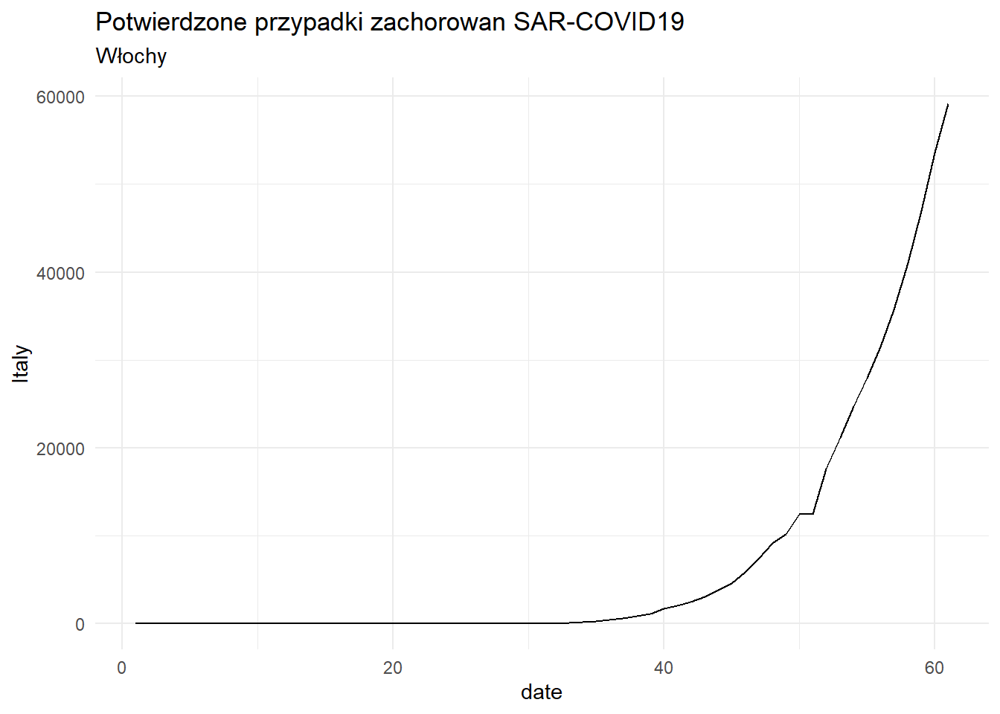
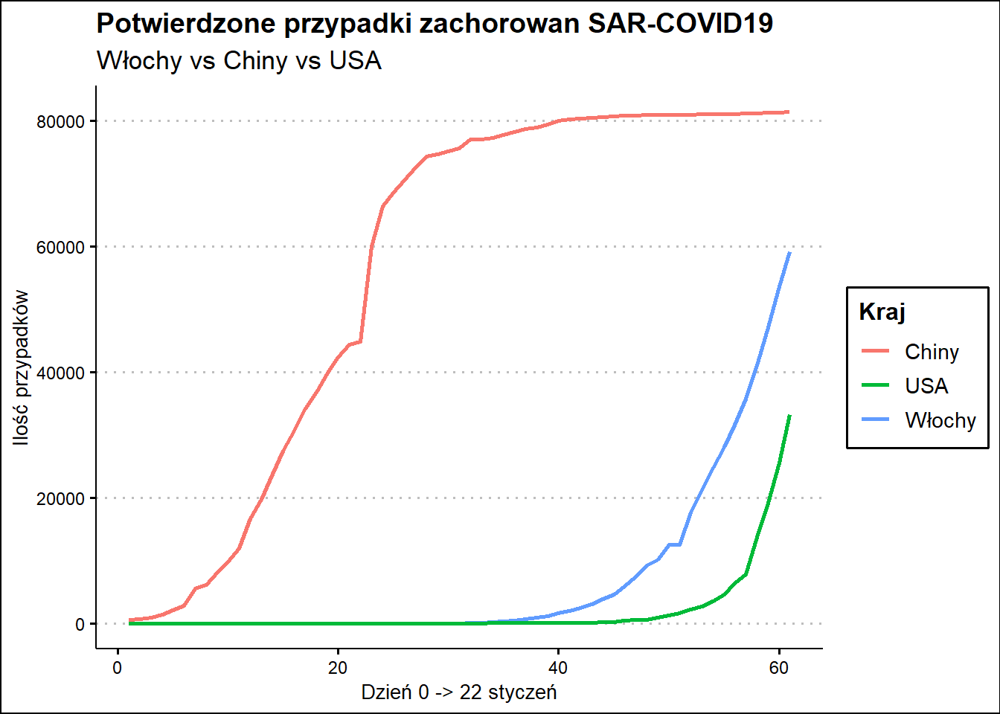

We’ve provided three datasets named corona_confirmed.csv, corona_recovered.csv and corona_deaths.csv. For the entirety of this project, we’ll be using these datasets. You can find more recent versions of this data at Johns Hopkins’ data repository on GitHub.
Wczytanie danych.
library(dplyr, warn.conflicts = FALSE)
library(readr)
# Load the data
confirmed <- read.csv("C:/R/CodeAcademy/CoronavirusProject/corona_confirmed.csv", sep = ",")
deaths <- read.csv("C:/R/CodeAcademy/CoronavirusProject/corona_deaths.csv", sep = ",")
recovered <- read.csv("C:/R/CodeAcademy/CoronavirusProject/corona_recovered.csv", sep = ",")
# Inspect the data
head(confirmed)## Province.State Country.Region Lat Long X1.22.20 X1.23.20 X1.24.20
## 1 Thailand 15.0000 101.0000 2 3 5
## 2 Japan 36.0000 138.0000 2 1 2
## 3 Singapore 1.2833 103.8333 0 1 3
## 4 Nepal 28.1667 84.2500 0 0 0
## 5 Malaysia 2.5000 112.5000 0 0 0
## 6 British Columbia Canada 49.2827 -123.1207 0 0 0
## X1.25.20 X1.26.20 X1.27.20 X1.28.20 X1.29.20 X1.30.20 X1.31.20 X2.1.20
## 1 7 8 8 14 14 14 19 19
## 2 2 4 4 7 7 11 15 20
## 3 3 4 5 7 7 10 13 16
## 4 1 1 1 1 1 1 1 1
## 5 3 4 4 4 7 8 8 8
## 6 0 0 0 1 1 1 1 1
## X2.2.20 X2.3.20 X2.4.20 X2.5.20 X2.6.20 X2.7.20 X2.8.20 X2.9.20 X2.10.20
## 1 19 19 25 25 25 25 32 32 32
## 2 20 20 22 22 45 25 25 26 26
## 3 18 18 24 28 28 30 33 40 45
## 4 1 1 1 1 1 1 1 1 1
## 5 8 8 10 12 12 12 16 16 18
## 6 1 1 1 2 2 4 4 4 4
## X2.11.20 X2.12.20 X2.13.20 X2.14.20 X2.15.20 X2.16.20 X2.17.20 X2.18.20
## 1 33 33 33 33 33 34 35 35
## 2 26 28 28 29 43 59 66 74
## 3 47 50 58 67 72 75 77 81
## 4 1 1 1 1 1 1 1 1
## 5 18 18 19 19 22 22 22 22
## 6 4 4 4 4 4 4 5 5
## X2.19.20 X2.20.20 X2.21.20 X2.22.20 X2.23.20 X2.24.20 X2.25.20 X2.26.20
## 1 35 35 35 35 35 35 37 40
## 2 84 94 105 122 147 159 170 189
## 3 84 84 85 85 89 89 91 93
## 4 1 1 1 1 1 1 1 1
## 5 22 22 22 22 22 22 22 22
## 6 5 5 6 6 6 6 7 7
## X2.27.20 X2.28.20 X2.29.20 X3.1.20 X3.2.20 X3.3.20 X3.4.20 X3.5.20 X3.6.20
## 1 40 41 42 42 43 43 43 47 48
## 2 214 228 241 256 274 293 331 360 420
## 3 93 93 102 106 108 110 110 117 130
## 4 1 1 1 1 1 1 1 1 1
## 5 23 23 25 29 29 36 50 50 83
## 6 7 7 8 8 8 9 12 13 21
## X3.7.20 X3.8.20 X3.9.20 X3.10.20 X3.11.20 X3.12.20 X3.13.20 X3.14.20 X3.15.20
## 1 50 50 50 53 59 70 75 82 114
## 2 461 502 511 581 639 639 701 773 839
## 3 138 150 150 160 178 178 200 212 226
## 4 1 1 1 1 1 1 1 1 1
## 5 93 99 117 129 149 149 197 238 428
## 6 21 27 32 32 39 46 64 64 73
## X3.16.20 X3.17.20 X3.18.20 X3.19.20 X3.20.20 X3.21.20 X3.22.20
## 1 147 177 212 272 322 411 599
## 2 825 878 889 924 963 1007 1086
## 3 243 266 313 345 385 432 455
## 4 1 1 1 1 1 1 2
## 5 566 673 790 900 1030 1183 1306
## 6 103 103 186 231 271 424 424Sprawdzenie łącznej liczby potwierdzonych przyadków.
NOTE: Jeśli nazwy kolumn zawierały by / nalezy objąc nazwe danej kolumny bactickasmy ``
# Sum the total number of cases on March 22nd
confirmed_sum <- confirmed %>%
select(X3.22.20) %>%
sum()
confirmed_sum## [1] 335955Let’s start to filter the data a bit more. Give these three tasks a try:
0)You may want to save these results to variables as they will be useful later!
# Filter for countries in the northern hemisphere
confirmed_north <- confirmed %>%
filter(Lat > 0) %>%
select(X3.22.20) %>%
sum()
confirmed_north ## [1] 329794# Filter for Australia cases
confirmed_Australia <- confirmed %>%
filter(Country.Region == "Australia") %>%
select(X3.22.20) %>%
sum()
confirmed_Australia## [1] 1314# Display percentages
confirmed_north/confirmed_sum*100## [1] 98.16612confirmed_Australia/confirmed_sum*100## [1] 0.3911238Notice that some countries have multiple rows of data. This happens when a country has information about specific states or provinces. While this information might be useful, it makes it a bit tricky to see the total number of cases by country.
We were able to get the total number of cases in Australia by using filter(), but what if we wanted to do this for every country? It would be a pain to have to type every country name into a filter function. Use group_by() to create a new data frame containing one row for every Country/Region.
Every column of those new rows should have the sum of the total number of cases for that country for every day. We can use the summarize_at() function to do this. summarize_at() takes two parameters:
Lat, Long, and Province/State. summarize_at() only works with numbers, so we’ll want to remove the column containing country names. We also don’t need to add the latitudes and longitudes. Remember, you can use the - symbol to list columns you want to exclude. Also don’t forget to use backticks around columns with / symbols. For example -`Province/State` will exclude that column. These small details get complicated!sum.After creating this new data frame inspect it. To confirm you did the group_by() correctly, find the row for Australia and confirm the number of cases on March 22nd matches your results from the previous step
# Group by countries
confirmed_grouped <- confirmed %>%
group_by(Country.Region) %>%
summarise(across(starts_with("X"), sum))
## Alternatywne rozwiązanie
# countries_confirmed <- confirmed %>%
# group_by(`Country/Region`) %>%
# summarize_at(vars(-Lat,-Long,-`Province/State`), sum)
#
# countries_confirmed
# Filter the grouped data set for Australia
confirmed_grouped %>%
filter(Country.Region == "Australia") %>%
select(X3.22.20)## # A tibble: 1 x 1
## X3.22.20
## <int>
## 1 1314Do the same process of grouping by country using the recovered dataset. What percentage of the cases in the US have recovered on March 22nd?
# Group by countries
USA_rocovered <- recovered %>%
group_by(Country.Region) %>%
summarise(across(starts_with("X"), sum)) %>%
#select(Country.Region,X3.22.20) %>%
filter(Country.Region == "US")
USA_rocovered ## # A tibble: 1 x 62
## Country.Region X1.22.20 X1.23.20 X1.24.20 X1.25.20 X1.26.20 X1.27.20 X1.28.20
## <chr> <int> <int> <int> <int> <int> <int> <int>
## 1 US 0 0 0 0 0 0 0
## # ... with 54 more variables: X1.29.20 <int>, X1.30.20 <int>, X1.31.20 <int>,
## # X2.1.20 <int>, X2.2.20 <int>, X2.3.20 <int>, X2.4.20 <int>, X2.5.20 <int>,
## # X2.6.20 <int>, X2.7.20 <int>, X2.8.20 <int>, X2.9.20 <int>, X2.10.20 <int>,
## # X2.11.20 <int>, X2.12.20 <int>, X2.13.20 <int>, X2.14.20 <int>,
## # X2.15.20 <int>, X2.16.20 <int>, X2.17.20 <int>, X2.18.20 <int>,
## # X2.19.20 <int>, X2.20.20 <int>, X2.21.20 <int>, X2.22.20 <int>,
## # X2.23.20 <int>, X2.24.20 <int>, X2.25.20 <int>, X2.26.20 <int>,
## # X2.27.20 <int>, X2.28.20 <int>, X2.29.20 <int>, X3.1.20 <int>,
## # X3.2.20 <int>, X3.3.20 <int>, X3.4.20 <int>, X3.5.20 <int>, X3.6.20 <int>,
## # X3.7.20 <int>, X3.8.20 <int>, X3.9.20 <int>, X3.10.20 <int>,
## # X3.11.20 <int>, X3.12.20 <int>, X3.13.20 <int>, X3.14.20 <int>,
## # X3.15.20 <int>, X3.16.20 <int>, X3.17.20 <int>, X3.18.20 <int>,
## # X3.19.20 <int>, X3.20.20 <int>, X3.21.20 <int>, X3.22.20 <int>You may see some surprising results — are there really zero recovered cases in the US? Let’s take a closer look at the US row in the recovered table. Either view the table in RStudio’s interface, or print the row in the cell block below. What do you notice about the values as you scroll to March 22nd?
It seems like the number of recovered cases is steadily increasing to 17, until March 18th, when it suddenly drops back to 0. This is surprising, and not what we expected! Perhaps we’re misunderstanding the format of the data, or perhaps there’s an error in reporting the data.
What’s the best course of action at this point? One strategy is to investigate the source of the data to truly understand what it is reporting. When we went back to Johns Hopkins’ repository, we found a note saying that the data had moved into a different file. It might be best to use that file!
If we wanted to use the current file, instead of reporting the number of confirmed and recovered cases in the US on March 22nd, we could report the maximum number of confirmed and recovered cases. Let’s give that a shot using the max() function. Make sure to also use select() to remove the Country/Region column — we can’t take the max of a row if it contains a string.
max() znalesc najwieksza wartosc w rzędach# Find the maximum number of confirmed and recovered cases
# Pozostawienie tylko kolumn z wartosciami liczbowymi pozwala za pomocą funkcji `max()` znalesc najwieksza wartosc w rzędach
max_confirmed <- confirmed %>%
filter(Country.Region == 'US') %>%
select(X1.22.20:X3.22.20) %>%
max()
max_recovered <- recovered %>%
filter(Country.Region == 'US') %>%
select(X1.22.20:X3.22.20) %>%
max()
max_recovered / max_confirmed * 100## [1] 0.03799152t() obraca tabele i zamienia ją na matrik as.data.frame() Zamienia spowrotem na DF
# Transpose the data frame
confirmed_transposed <- as.data.frame(t(confirmed_grouped))
head(confirmed_transposed)## V1 V2 V3 V4 V5 V6
## Country.Region Afghanistan Albania Algeria Andorra Angola Antigua and Barbuda
## X1.22.20 0 0 0 0 0 0
## X1.23.20 0 0 0 0 0 0
## X1.24.20 0 0 0 0 0 0
## X1.25.20 0 0 0 0 0 0
## X1.26.20 0 0 0 0 0 0
## V7 V8 V9 V10 V11 V12
## Country.Region Argentina Armenia Australia Austria Azerbaijan Bahamas, The
## X1.22.20 0 0 0 0 0 0
## X1.23.20 0 0 0 0 0 0
## X1.24.20 0 0 0 0 0 0
## X1.25.20 0 0 0 0 0 0
## X1.26.20 0 0 4 0 0 0
## V13 V14 V15 V16 V17 V18 V19 V20
## Country.Region Bahrain Bangladesh Barbados Belarus Belgium Benin Bhutan Bolivia
## X1.22.20 0 0 0 0 0 0 0 0
## X1.23.20 0 0 0 0 0 0 0 0
## X1.24.20 0 0 0 0 0 0 0 0
## X1.25.20 0 0 0 0 0 0 0 0
## X1.26.20 0 0 0 0 0 0 0 0
## V21 V22 V23 V24 V25
## Country.Region Bosnia and Herzegovina Brazil Brunei Bulgaria Burkina Faso
## X1.22.20 0 0 0 0 0
## X1.23.20 0 0 0 0 0
## X1.24.20 0 0 0 0 0
## X1.25.20 0 0 0 0 0
## X1.26.20 0 0 0 0 0
## V26 V27 V28 V29 V30
## Country.Region Cabo Verde Cambodia Cameroon Canada Cape Verde
## X1.22.20 0 0 0 0 0
## X1.23.20 0 0 0 0 0
## X1.24.20 0 0 0 0 0
## X1.25.20 0 0 0 0 0
## X1.26.20 0 0 0 1 0
## V31 V32 V33 V34 V35
## Country.Region Central African Republic Chad Chile China Colombia
## X1.22.20 0 0 0 548 0
## X1.23.20 0 0 0 643 0
## X1.24.20 0 0 0 920 0
## X1.25.20 0 0 0 1406 0
## X1.26.20 0 0 0 2075 0
## V36 V37 V38 V39
## Country.Region Congo (Brazzaville) Congo (Kinshasa) Costa Rica Cote d'Ivoire
## X1.22.20 0 0 0 0
## X1.23.20 0 0 0 0
## X1.24.20 0 0 0 0
## X1.25.20 0 0 0 0
## X1.26.20 0 0 0 0
## V40 V41 V42 V43 V44 V45 V46
## Country.Region Croatia Cruise Ship Cuba Cyprus Czechia Denmark Djibouti
## X1.22.20 0 0 0 0 0 0 0
## X1.23.20 0 0 0 0 0 0 0
## X1.24.20 0 0 0 0 0 0 0
## X1.25.20 0 0 0 0 0 0 0
## X1.26.20 0 0 0 0 0 0 0
## V47 V48 V49 V50 V51 V52
## Country.Region Dominica Dominican Republic East Timor Ecuador Egypt El Salvador
## X1.22.20 0 0 0 0 0 0
## X1.23.20 0 0 0 0 0 0
## X1.24.20 0 0 0 0 0 0
## X1.25.20 0 0 0 0 0 0
## X1.26.20 0 0 0 0 0 0
## V53 V54 V55 V56 V57 V58 V59
## Country.Region Equatorial Guinea Eritrea Estonia Eswatini Ethiopia Fiji Finland
## X1.22.20 0 0 0 0 0 0 0
## X1.23.20 0 0 0 0 0 0 0
## X1.24.20 0 0 0 0 0 0 0
## X1.25.20 0 0 0 0 0 0 0
## X1.26.20 0 0 0 0 0 0 0
## V60 V61 V62 V63 V64 V65 V66 V67
## Country.Region France Gabon Gambia, The Georgia Germany Ghana Greece Grenada
## X1.22.20 0 0 0 0 0 0 0 0
## X1.23.20 0 0 0 0 0 0 0 0
## X1.24.20 2 0 0 0 0 0 0 0
## X1.25.20 3 0 0 0 0 0 0 0
## X1.26.20 3 0 0 0 0 0 0 0
## V68 V69 V70 V71 V72 V73 V74 V75
## Country.Region Guatemala Guinea Guyana Haiti Holy See Honduras Hungary Iceland
## X1.22.20 0 0 0 0 0 0 0 0
## X1.23.20 0 0 0 0 0 0 0 0
## X1.24.20 0 0 0 0 0 0 0 0
## X1.25.20 0 0 0 0 0 0 0 0
## X1.26.20 0 0 0 0 0 0 0 0
## V76 V77 V78 V79 V80 V81 V82 V83 V84
## Country.Region India Indonesia Iran Iraq Ireland Israel Italy Jamaica Japan
## X1.22.20 0 0 0 0 0 0 0 0 2
## X1.23.20 0 0 0 0 0 0 0 0 1
## X1.24.20 0 0 0 0 0 0 0 0 2
## X1.25.20 0 0 0 0 0 0 0 0 2
## X1.26.20 0 0 0 0 0 0 0 0 4
## V85 V86 V87 V88 V89 V90 V91
## Country.Region Jordan Kazakhstan Kenya Korea, South Kosovo Kuwait Kyrgyzstan
## X1.22.20 0 0 0 1 0 0 0
## X1.23.20 0 0 0 1 0 0 0
## X1.24.20 0 0 0 2 0 0 0
## X1.25.20 0 0 0 2 0 0 0
## X1.26.20 0 0 0 3 0 0 0
## V92 V93 V94 V95 V96 V97
## Country.Region Latvia Lebanon Liberia Liechtenstein Lithuania Luxembourg
## X1.22.20 0 0 0 0 0 0
## X1.23.20 0 0 0 0 0 0
## X1.24.20 0 0 0 0 0 0
## X1.25.20 0 0 0 0 0 0
## X1.26.20 0 0 0 0 0 0
## V98 V99 V100 V101 V102 V103
## Country.Region Madagascar Malaysia Maldives Malta Martinique Mauritania
## X1.22.20 0 0 0 0 0 0
## X1.23.20 0 0 0 0 0 0
## X1.24.20 0 0 0 0 0 0
## X1.25.20 0 3 0 0 0 0
## X1.26.20 0 4 0 0 0 0
## V104 V105 V106 V107 V108 V109 V110
## Country.Region Mauritius Mexico Moldova Monaco Mongolia Montenegro Morocco
## X1.22.20 0 0 0 0 0 0 0
## X1.23.20 0 0 0 0 0 0 0
## X1.24.20 0 0 0 0 0 0 0
## X1.25.20 0 0 0 0 0 0 0
## X1.26.20 0 0 0 0 0 0 0
## V111 V112 V113 V114 V115 V116 V117
## Country.Region Mozambique Namibia Nepal Netherlands New Zealand Nicaragua Niger
## X1.22.20 0 0 0 0 0 0 0
## X1.23.20 0 0 0 0 0 0 0
## X1.24.20 0 0 0 0 0 0 0
## X1.25.20 0 0 1 0 0 0 0
## X1.26.20 0 0 1 0 0 0 0
## V118 V119 V120 V121 V122 V123
## Country.Region Nigeria North Macedonia Norway Oman Pakistan Panama
## X1.22.20 0 0 0 0 0 0
## X1.23.20 0 0 0 0 0 0
## X1.24.20 0 0 0 0 0 0
## X1.25.20 0 0 0 0 0 0
## X1.26.20 0 0 0 0 0 0
## V124 V125 V126 V127 V128 V129 V130
## Country.Region Papua New Guinea Paraguay Peru Philippines Poland Portugal Qatar
## X1.22.20 0 0 0 0 0 0 0
## X1.23.20 0 0 0 0 0 0 0
## X1.24.20 0 0 0 0 0 0 0
## X1.25.20 0 0 0 0 0 0 0
## X1.26.20 0 0 0 0 0 0 0
## V131 V132 V133 V134
## Country.Region Romania Russia Rwanda Saint Lucia
## X1.22.20 0 0 0 0
## X1.23.20 0 0 0 0
## X1.24.20 0 0 0 0
## X1.25.20 0 0 0 0
## X1.26.20 0 0 0 0
## V135 V136 V137 V138
## Country.Region Saint Vincent and the Grenadines San Marino Saudi Arabia Senegal
## X1.22.20 0 0 0 0
## X1.23.20 0 0 0 0
## X1.24.20 0 0 0 0
## X1.25.20 0 0 0 0
## X1.26.20 0 0 0 0
## V139 V140 V141 V142 V143 V144
## Country.Region Serbia Seychelles Singapore Slovakia Slovenia Somalia
## X1.22.20 0 0 0 0 0 0
## X1.23.20 0 0 1 0 0 0
## X1.24.20 0 0 3 0 0 0
## X1.25.20 0 0 3 0 0 0
## X1.26.20 0 0 4 0 0 0
## V145 V146 V147 V148 V149 V150 V151
## Country.Region South Africa Spain Sri Lanka Sudan Suriname Sweden Switzerland
## X1.22.20 0 0 0 0 0 0 0
## X1.23.20 0 0 0 0 0 0 0
## X1.24.20 0 0 0 0 0 0 0
## X1.25.20 0 0 0 0 0 0 0
## X1.26.20 0 0 0 0 0 0 0
## V152 V153 V154 V155 V156 V157
## Country.Region Syria Taiwan* Tanzania Thailand Timor-Leste Togo
## X1.22.20 0 1 0 2 0 0
## X1.23.20 0 1 0 3 0 0
## X1.24.20 0 3 0 5 0 0
## X1.25.20 0 3 0 7 0 0
## X1.26.20 0 4 0 8 0 0
## V158 V159 V160 V161 V162
## Country.Region Trinidad and Tobago Tunisia Turkey Uganda Ukraine
## X1.22.20 0 0 0 0 0
## X1.23.20 0 0 0 0 0
## X1.24.20 0 0 0 0 0
## X1.25.20 0 0 0 0 0
## X1.26.20 0 0 0 0 0
## V163 V164 V165 V166 V167
## Country.Region United Arab Emirates United Kingdom Uruguay US Uzbekistan
## X1.22.20 0 0 0 1 0
## X1.23.20 0 0 0 1 0
## X1.24.20 0 0 0 2 0
## X1.25.20 0 0 0 2 0
## X1.26.20 0 0 0 5 0
## V168 V169 V170 V171
## Country.Region Venezuela Vietnam Zambia Zimbabwe
## X1.22.20 0 0 0 0
## X1.23.20 0 2 0 0
## X1.24.20 0 2 0 0
## X1.25.20 0 2 0 0
## X1.26.20 0 2 0 0# Zmiana nazw kolumna na takie jak w 1 rzedzie
colnames(confirmed_transposed) <- confirmed_transposed[1, ]
#head(confirmed_transposed)
confirmed_transposed[1:6,1:6]## Afghanistan Albania Algeria Andorra Angola Antigua and Barbuda
## Country.Region Afghanistan Albania Algeria Andorra Angola Antigua and Barbuda
## X1.22.20 0 0 0 0 0 0
## X1.23.20 0 0 0 0 0 0
## X1.24.20 0 0 0 0 0 0
## X1.25.20 0 0 0 0 0 0
## X1.26.20 0 0 0 0 0 0# Usunięcie 1 wiersza
confirmed_transposed <- confirmed_transposed[-1, ]
# head(confirmed_transposed)
confirmed_transposed[1:6,1:6]## Afghanistan Albania Algeria Andorra Angola Antigua and Barbuda
## X1.22.20 0 0 0 0 0 0
## X1.23.20 0 0 0 0 0 0
## X1.24.20 0 0 0 0 0 0
## X1.25.20 0 0 0 0 0 0
## X1.26.20 0 0 0 0 0 0
## X1.27.20 0 0 0 0 0 0Taki sam efekt można uzyskać korzystajac z pakietu janitor
First, we installed and loaded the janitor package. Then we passed our transposed data frame into the row_to_names() function and used the parameter row_number = 1.
# library(janitor)
# Make the first row the column titlesMARGIN = 2 określa że ma być zastosowane tylko do kolumnas.data.frame()# Transform the columns to numeric values
# Wartości tutaj są klasy character
str(confirmed_transposed)## 'data.frame': 61 obs. of 171 variables:
## $ Afghanistan : chr " 0" " 0" " 0" " 0" ...
## $ Albania : chr " 0" " 0" " 0" " 0" ...
## $ Algeria : chr " 0" " 0" " 0" " 0" ...
## $ Andorra : chr " 0" " 0" " 0" " 0" ...
## $ Angola : chr " 0" " 0" " 0" " 0" ...
## $ Antigua and Barbuda : chr " 0" " 0" " 0" " 0" ...
## $ Argentina : chr " 0" " 0" " 0" " 0" ...
## $ Armenia : chr " 0" " 0" " 0" " 0" ...
## $ Australia : chr " 0" " 0" " 0" " 0" ...
## $ Austria : chr " 0" " 0" " 0" " 0" ...
## $ Azerbaijan : chr " 0" " 0" " 0" " 0" ...
## $ Bahamas, The : chr " 0" " 0" " 0" " 0" ...
## $ Bahrain : chr " 0" " 0" " 0" " 0" ...
## $ Bangladesh : chr " 0" " 0" " 0" " 0" ...
## $ Barbados : chr " 0" " 0" " 0" " 0" ...
## $ Belarus : chr " 0" " 0" " 0" " 0" ...
## $ Belgium : chr " 0" " 0" " 0" " 0" ...
## $ Benin : chr " 0" " 0" " 0" " 0" ...
## $ Bhutan : chr " 0" " 0" " 0" " 0" ...
## $ Bolivia : chr " 0" " 0" " 0" " 0" ...
## $ Bosnia and Herzegovina : chr " 0" " 0" " 0" " 0" ...
## $ Brazil : chr " 0" " 0" " 0" " 0" ...
## $ Brunei : chr " 0" " 0" " 0" " 0" ...
## $ Bulgaria : chr " 0" " 0" " 0" " 0" ...
## $ Burkina Faso : chr " 0" " 0" " 0" " 0" ...
## $ Cabo Verde : chr " 0" " 0" " 0" " 0" ...
## $ Cambodia : chr " 0" " 0" " 0" " 0" ...
## $ Cameroon : chr " 0" " 0" " 0" " 0" ...
## $ Canada : chr " 0" " 0" " 0" " 0" ...
## $ Cape Verde : chr " 0" " 0" " 0" " 0" ...
## $ Central African Republic : chr " 0" " 0" " 0" " 0" ...
## $ Chad : chr " 0" " 0" " 0" " 0" ...
## $ Chile : chr " 0" " 0" " 0" " 0" ...
## $ China : chr "548" "643" "920" "1406" ...
## $ Colombia : chr " 0" " 0" " 0" " 0" ...
## $ Congo (Brazzaville) : chr " 0" " 0" " 0" " 0" ...
## $ Congo (Kinshasa) : chr " 0" " 0" " 0" " 0" ...
## $ Costa Rica : chr " 0" " 0" " 0" " 0" ...
## $ Cote d'Ivoire : chr " 0" " 0" " 0" " 0" ...
## $ Croatia : chr " 0" " 0" " 0" " 0" ...
## $ Cruise Ship : chr " 0" " 0" " 0" " 0" ...
## $ Cuba : chr " 0" " 0" " 0" " 0" ...
## $ Cyprus : chr " 0" " 0" " 0" " 0" ...
## $ Czechia : chr " 0" " 0" " 0" " 0" ...
## $ Denmark : chr " 0" " 0" " 0" " 0" ...
## $ Djibouti : chr " 0" " 0" " 0" " 0" ...
## $ Dominica : chr " 0" " 0" " 0" " 0" ...
## $ Dominican Republic : chr " 0" " 0" " 0" " 0" ...
## $ East Timor : chr " 0" " 0" " 0" " 0" ...
## $ Ecuador : chr " 0" " 0" " 0" " 0" ...
## $ Egypt : chr " 0" " 0" " 0" " 0" ...
## $ El Salvador : chr " 0" " 0" " 0" " 0" ...
## $ Equatorial Guinea : chr " 0" " 0" " 0" " 0" ...
## $ Eritrea : chr " 0" " 0" " 0" " 0" ...
## $ Estonia : chr " 0" " 0" " 0" " 0" ...
## $ Eswatini : chr " 0" " 0" " 0" " 0" ...
## $ Ethiopia : chr " 0" " 0" " 0" " 0" ...
## $ Fiji : chr " 0" " 0" " 0" " 0" ...
## $ Finland : chr " 0" " 0" " 0" " 0" ...
## $ France : chr " 0" " 0" " 2" " 3" ...
## $ Gabon : chr " 0" " 0" " 0" " 0" ...
## $ Gambia, The : chr " 0" " 0" " 0" " 0" ...
## $ Georgia : chr " 0" " 0" " 0" " 0" ...
## $ Germany : chr " 0" " 0" " 0" " 0" ...
## $ Ghana : chr " 0" " 0" " 0" " 0" ...
## $ Greece : chr " 0" " 0" " 0" " 0" ...
## $ Grenada : chr " 0" " 0" " 0" " 0" ...
## $ Guatemala : chr " 0" " 0" " 0" " 0" ...
## $ Guinea : chr " 0" " 0" " 0" " 0" ...
## $ Guyana : chr " 0" " 0" " 0" " 0" ...
## $ Haiti : chr " 0" " 0" " 0" " 0" ...
## $ Holy See : chr " 0" " 0" " 0" " 0" ...
## $ Honduras : chr " 0" " 0" " 0" " 0" ...
## $ Hungary : chr " 0" " 0" " 0" " 0" ...
## $ Iceland : chr " 0" " 0" " 0" " 0" ...
## $ India : chr " 0" " 0" " 0" " 0" ...
## $ Indonesia : chr " 0" " 0" " 0" " 0" ...
## $ Iran : chr " 0" " 0" " 0" " 0" ...
## $ Iraq : chr " 0" " 0" " 0" " 0" ...
## $ Ireland : chr " 0" " 0" " 0" " 0" ...
## $ Israel : chr " 0" " 0" " 0" " 0" ...
## $ Italy : chr " 0" " 0" " 0" " 0" ...
## $ Jamaica : chr " 0" " 0" " 0" " 0" ...
## $ Japan : chr " 2" " 1" " 2" " 2" ...
## $ Jordan : chr " 0" " 0" " 0" " 0" ...
## $ Kazakhstan : chr " 0" " 0" " 0" " 0" ...
## $ Kenya : chr " 0" " 0" " 0" " 0" ...
## $ Korea, South : chr " 1" " 1" " 2" " 2" ...
## $ Kosovo : chr " 0" " 0" " 0" " 0" ...
## $ Kuwait : chr " 0" " 0" " 0" " 0" ...
## $ Kyrgyzstan : chr " 0" " 0" " 0" " 0" ...
## $ Latvia : chr " 0" " 0" " 0" " 0" ...
## $ Lebanon : chr " 0" " 0" " 0" " 0" ...
## $ Liberia : chr " 0" " 0" " 0" " 0" ...
## $ Liechtenstein : chr " 0" " 0" " 0" " 0" ...
## $ Lithuania : chr " 0" " 0" " 0" " 0" ...
## $ Luxembourg : chr " 0" " 0" " 0" " 0" ...
## $ Madagascar : chr " 0" " 0" " 0" " 0" ...
## $ Malaysia : chr " 0" " 0" " 0" " 3" ...
## [list output truncated]# MARGIN = 2 określa że ma być zastosowane tylko do kolumn
confirmed_transposed <- apply(confirmed_transposed, MARGIN = 2, as.numeric)
# Sprawdzenie
str(confirmed_transposed)## num [1:61, 1:171] 0 0 0 0 0 0 0 0 0 0 ...
## - attr(*, "dimnames")=List of 2
## ..$ : NULL
## ..$ : chr [1:171] "Afghanistan" "Albania" "Algeria" "Andorra" ...# Zamiana spowrotem na DF
confirmed_transposed <- as.data.frame(confirmed_transposed)Nice work - we got there! Let’s see what our hard work allows us to do. Let’s once again find the maximum number of cases reported in the US. To do so, simply select the US column and pipe the result to the max() function. This should be the same value that we found before we rotate the data frame.
# Find the maximum number of confirmed cases in the US
max(confirmed_transposed$US)## [1] 33272# Podczas obracania straciliśmy nazwy wierszy. Dzień pierwszy, 1 = 22 Stycznia
# Add the date column
confirmed_transposed <- confirmed_transposed %>%
mutate(date = 1:nrow(confirmed_transposed))library(ggplot2)
# Create a line graph with date on the X axis and number of cases in Italy on the Y axis
ggplot(data = confirmed_transposed, aes(x=date, y=Italy)) +
geom_line()+
labs(title = "Potwierdzone przypadki zachorowan SAR-COVID19", subtitle = "Włochy")+
theme_minimal()
# Add a proper title, x label, and y label
library(ggthemes)
ggplot(data = confirmed_transposed) +
geom_line(aes(x=date, y=Italy, color= "Włochy"), size = 1)+
geom_line( aes(x=date, y=US, color= "USA"), size = 1)+
geom_line( aes(x=date, y=China, color= "Chiny"), size = 1)+
labs(title = "Potwierdzone przypadki zachorowan SAR-COVID19",
subtitle = "Włochy vs Chiny vs USA",
y= "Ilość przypadków",
x= "Dzień 0 -> 22 styczeń")+
scale_color_discrete(name = "Kraj")+
theme_clean()
If you’d like to continue working with this data, here are some challenges: